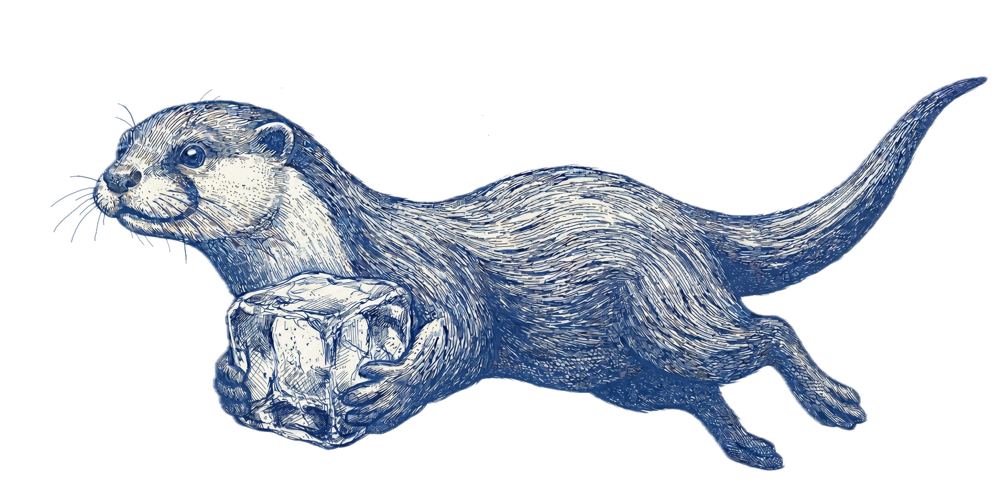
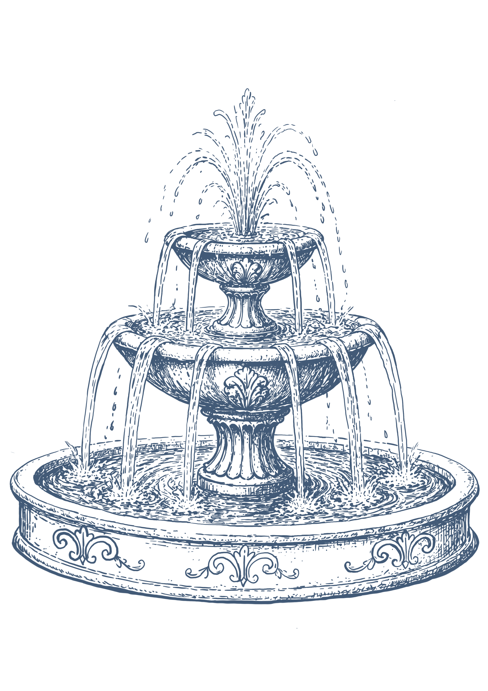

I am building my knowledge map in Human-Computer Interaction


About Me
im ruolin zhang im the superhero...
Notebook
📒 mindmap of the book
Introduction to Human-Computer Interaction
🗒️ paper
xxxxxxx
📑 draft
Future Exploration...
Research
in the progress
---
markmap:
color: ["#8596A6","#B89C9A","#9EACA0","#C9BAA6","#978B94"]
---
# The Mindmap of the Book
## Part I Overview of Human–Computer Interaction
### Why is HCI challenging？
#### Humans are complex
#### Computers are complex
#### Contexts are complex
#### Design is hard
### Human–computer interaction as a field
#### The term HCI has been in use since the mid-1970s
### Definition of HCI
#### Design + Evaluation + Implementation + Human use + Interaction phenomena
#### HCI is about building interactive systems
#### People are the starting point for HCI
#### HCI is concerned with investigating all phenomena relevant to interaction
### Research in HCI
#### Empirical problems
##### Data-driven understanding
#### Conceptual problems
##### The value of this type of problem lies in providing theoretical constructions
#### Constructive problems
##### Building knowledge for design
### Empirical data are linked to knowledge, and knowledge is linked to design.
### The practice of HCI
#### Understanding users/ Designing and prototyping/ Evaluating systems /Engaging stakeholders
### HCI is a Multidisciplinary field
### Human-centered approach
#### Understand users + Participate in user research and design + Undertake ethical responsibility
### Interaction
#### Interaction is emergent
#### Co-adaptation
### User Interface
### Design
#### Design is about envisioning things as they could be
### Engineering and Computing
### Evaluation
#### Verification, Validation, Testing
### Why HCI matters
#### 1. Interactive systems are difficult to use
#### 2. The egocentric fallacy: you are often NOT the user
#### 3. HCI is right
#### 4. HCI pays off
#### 5. HCI shapes the future
### Our approach to HCI
#### A focus on principles
##### For example, direct manipulation is a principle for organizing the interaction with graphical user interfaces
#### Pluralism in methods and theories
#### Essential insights supported by research
#### Optimism in solving HCI problems
##### Do not blindly believe in the omnipotence of technology
## Part II Understanding People
## Part III User Research
## Part IV Understanding Interaction
## Part V User Interfaces
## Part VI Design
## Part VII Engineering
## Part VIII Evaluation
## Part IX Conclusion
---
markmap:
color: ["#8596A6","#B89C9A","#9EACA0","#C9BAA6","#978B94"]
---
# Don't Make Me Think
## 1. 核心法则
- 不要让用户思考
- 我们不做最佳选择